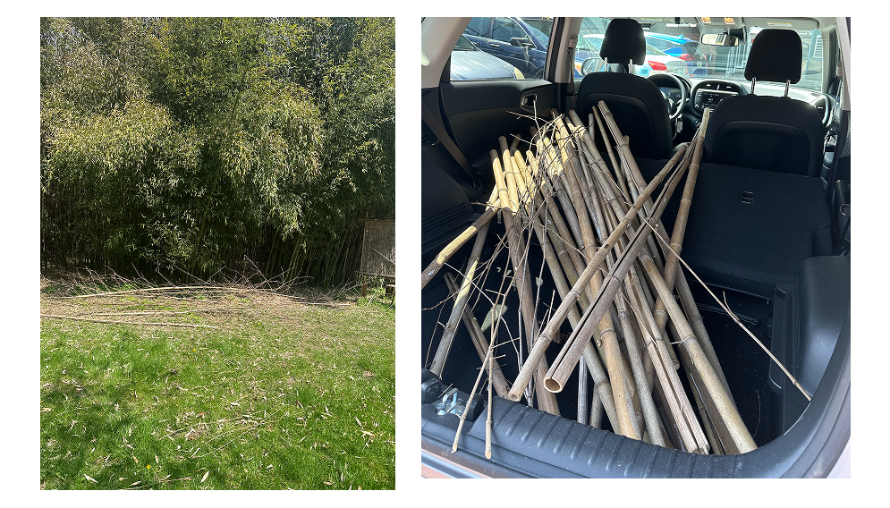
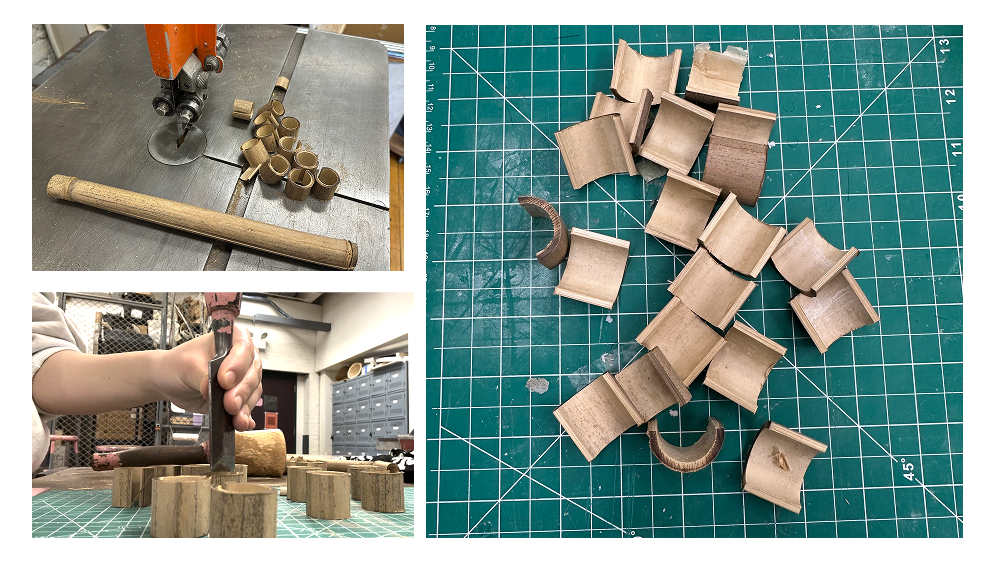
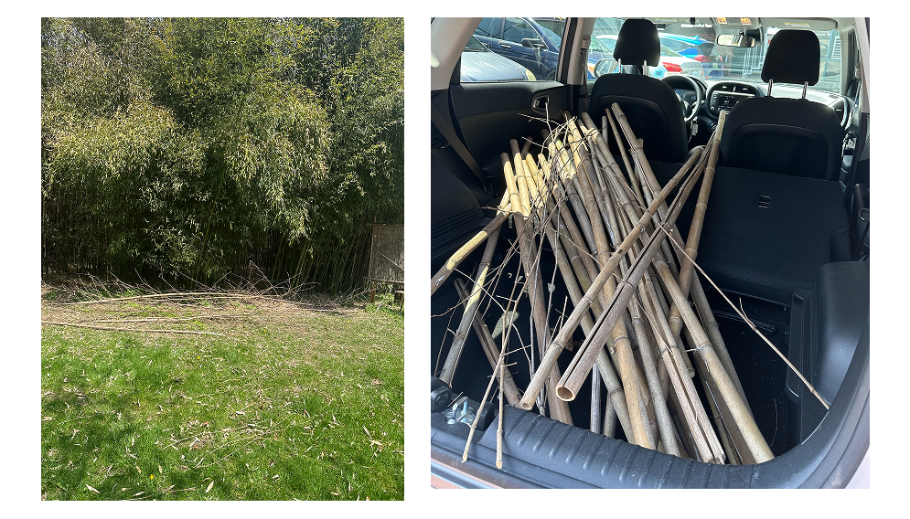
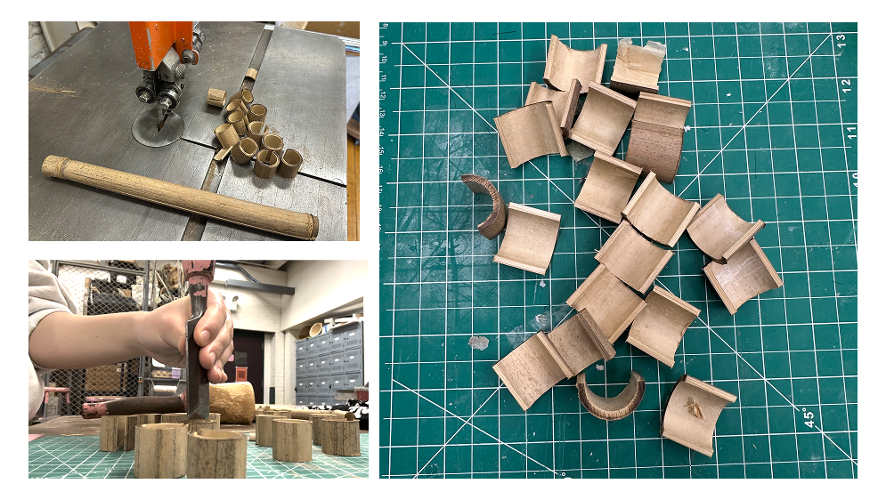
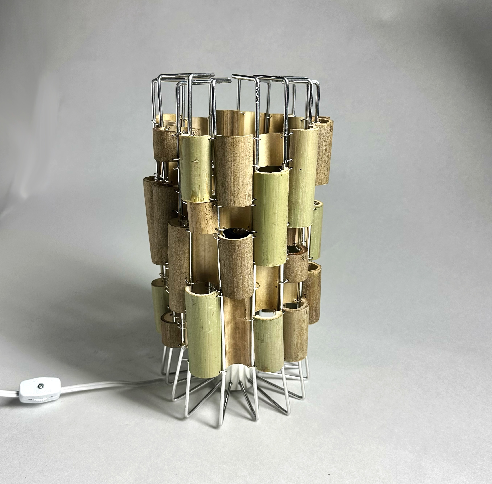
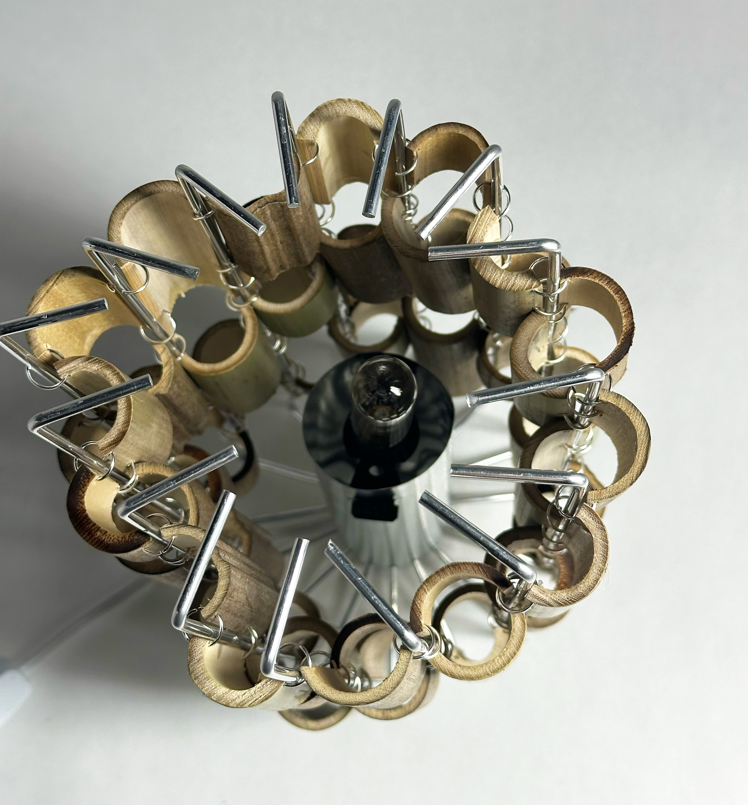
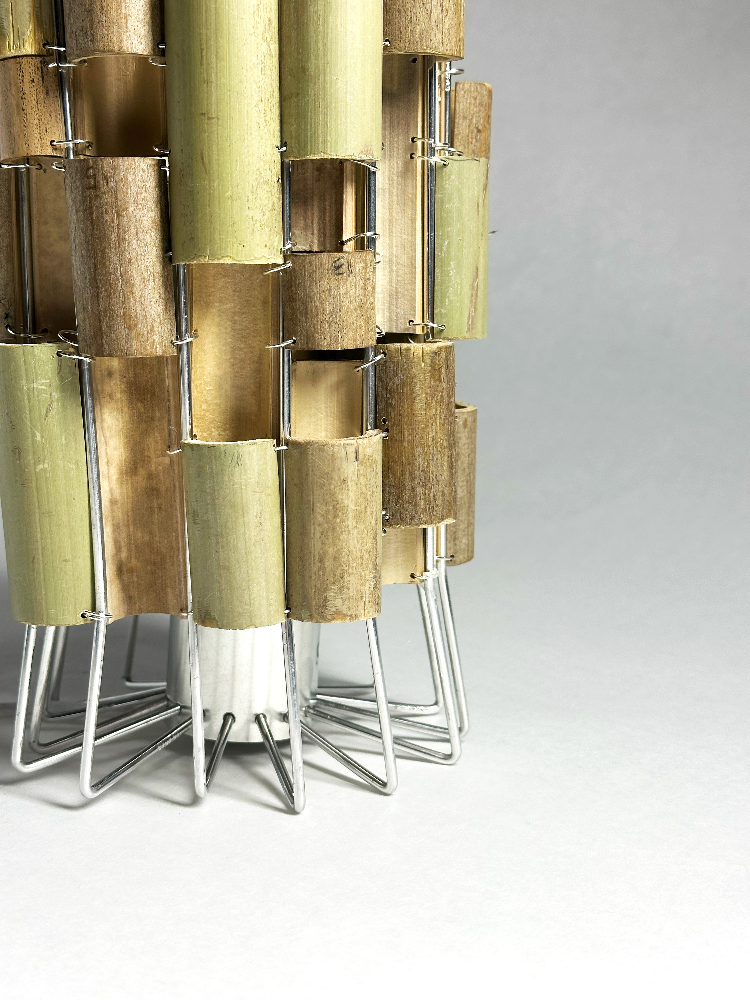
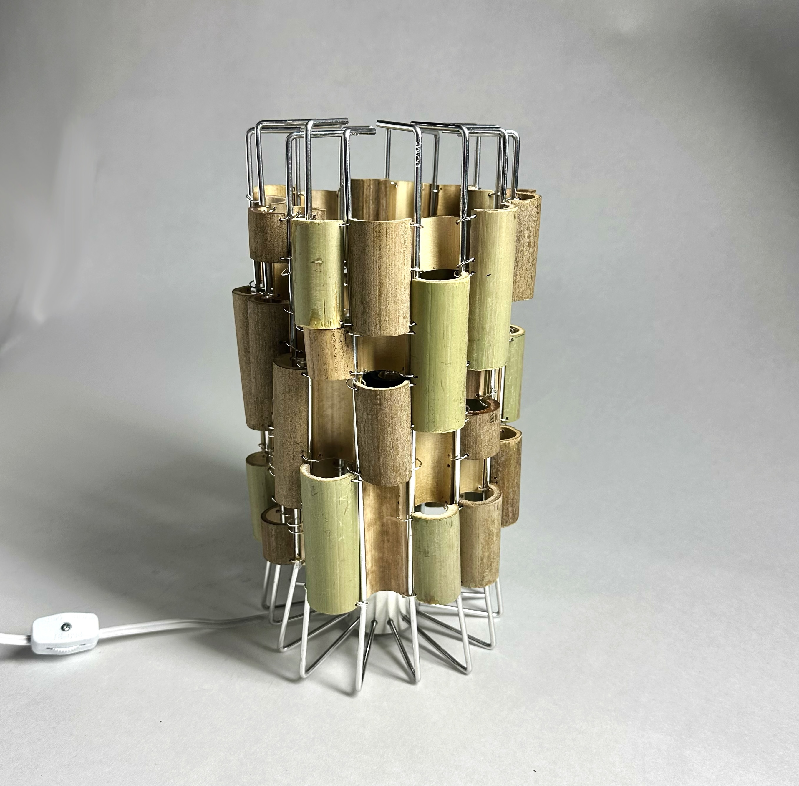
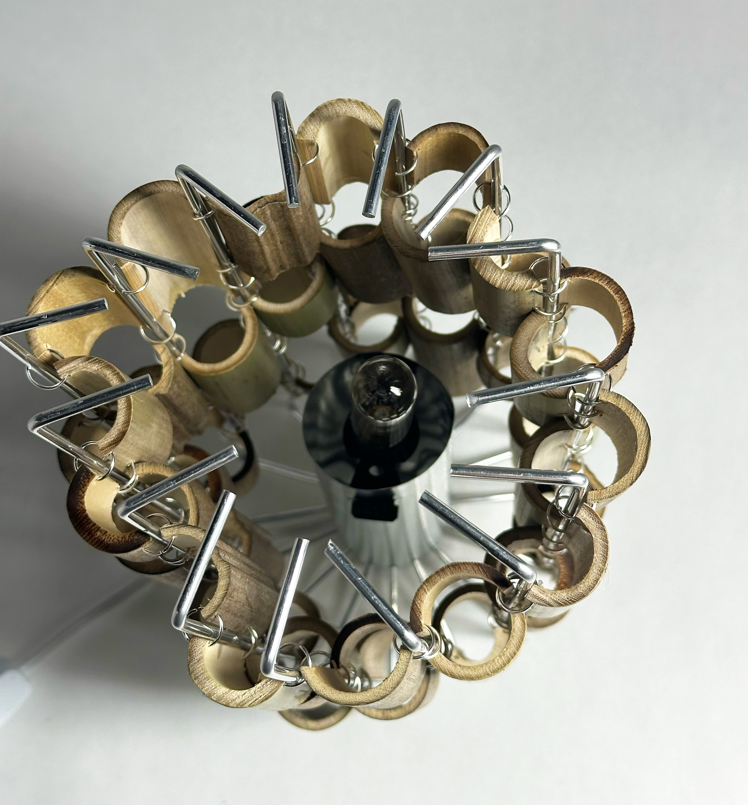
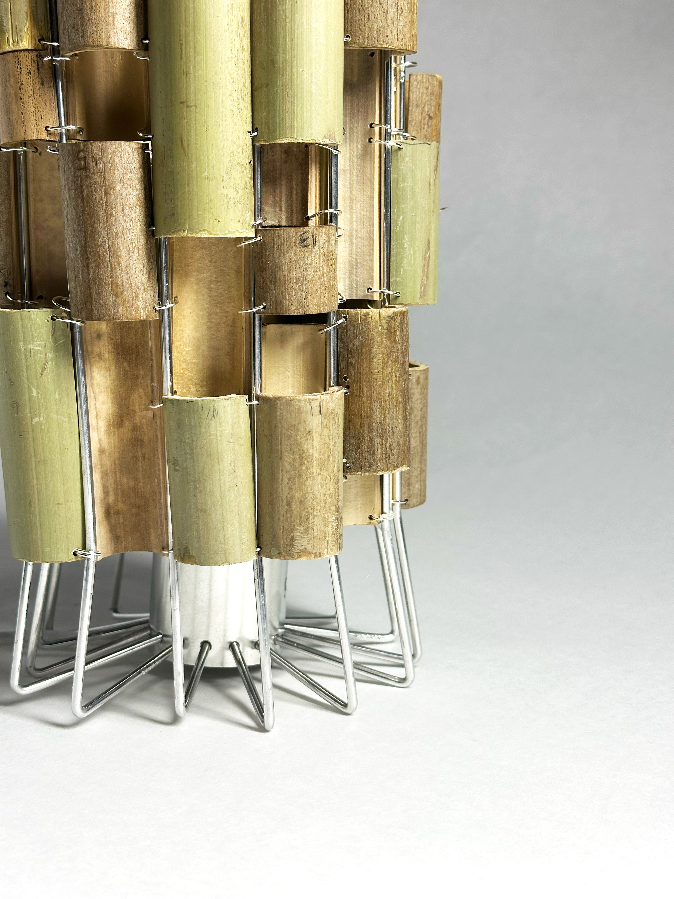

Bamboo Lamp
Spring 2025
This project explores research as a practice carried out through experimental making. Using reclaimed bamboo sourced from Seven Arrows Farm in Providence, the material was studied through its affordances and limitations. A series of iterative experiments tested different forms, structures, and combinations to understand the bamboo’s physical properties. Insights gained from this process informed the design of a final object—a lamp—that directly emerges from the material research.
 



Iteration group 1

Iteration group 2
 




